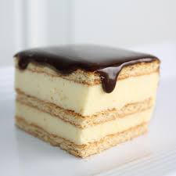

Cake

Chocolate Éclair Cake
This chocolate éclair cake is incredibly decadent and shockingly easy to make with just a few simple ingredients.
Ingredients
- 1 (16 ounce) package graham crackers
- 4 cups milk
- 2 (3.5 ounce) packages instant vanilla pudding mix
- 1 (16 ounce) package frozen whipped topping, thawed
- 1 (16 ounce) package prepared chocolate frosting
Steps
- Line the bottom of a 9x13-inch baking dish with a single layer of graham crackers.
- Combine milk and vanilla pudding in a large bowl; whisk briskly for 2 minutes. Fold in whipped topping until combined.
- Spread 1/2 of the pudding mixture over graham crackers in the pan. Top with a single layer of graham crackers. Cover with remaining pudding mixture, then top with another layer of graham crackers.
- Cook the uncovered container of prepared frosting in the microwave on half power for 1 minute. Pour over the top of cake; spread evenly to the edges. Refrigerate cake for at least 12 hours before serving.